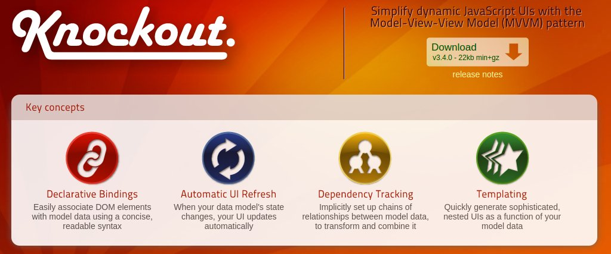

Старый добрый нокаут
докладчик Черносов Денис

Введение, история появления
- Первый релиз: 5 июля 2010 г.
- Автор: Steve Sanderson (Microsoft). Лицензия MIT
- Поддержка браузеров: IE 6+, Firefox 3.5+, Chrome, Opera, Safari (desktop/mobile)
- Статистика использования на июнь 2016 года: на 251 сайте из 10k наиболее популярных (2.5%), в целом < 0.1% *
*Источник: http://trends.builtwith.com/javascript/KnockoutJS.
Документация, сообщество, плагины
Ключевые концепции
- Объекты, доступные для наблюдения (Observables) и отслеживание зависимостей
- Декларативное связывание (Declarative bindings)
- Шаблонизация (Templating)
Архитектура Model-View-ViewModel (MVVM)
- Model - это ваши бизнес-данные
- ViewModel - данные и логика представления. Переменные и функции для генерации шаблонов и обработки событий UI
- View - это интерактивное UI-представление состояния ViewModel. Оно посылает команды во ViewModel и обновляется, когда обновляется ViewModel
Шаблон Наблюдатель (Observer)
var self = this;
self.name = ko.observable('Anonymous');
self.list = ko.observableArray(['a', 'b', 'c']);
var nameLogger = self.name.subscribe(function(newValue) {
console.log(newValue) ;
});
if (!debugMode) { nameLogger.dispose(); }
События и beforeChange и change не всегда отработают в паре
Шаблон Наблюдатель (Observer)
self.total = ko.computed(function() {
return this.list().length;
}, self);
self.fullName = ko.pureComputed(function() {
return this.firstName() + " " + this.lastName();
}, self);
Расширения наблюдателей (ko.extenders)
ko.extenders.logChange = function(target, option) {
target.subscribe(function(newValue) {
console.log(option + ": " + newValue);
}); return target;
};
this.firstName = ko.observable("Bob")
.extend({logChange: "first name"});
Обвязки (Bindings)
ViewModel
var myViewModel = { personName: ko.observable('Bob') };
...
ko.applyBindings(myViewModel);
View
The name is <span data-bind="text: personName"></span>
Обвязки (Bindings)
- visible, text, html, css, style, attr
- foreach, if, ifnot, with, template, component
- click, event, submit, enable, disable, value, textInput, hasFocus, checked, options, selectedOptions, uniqueName
- ...
Собственные обвязки (ko.bindingHandlers)
ko.bindingHandlers.popover = {
init: function (element) {
$(element).popover({ placement: "right",
trigger: 'hover'});
}};
<span data-bind="popover: true"
data-content="Some text"></span>
Назад в будущее: почти как в JQuery, но гораздо лучше (Unobtrusive event handlers)
- ko.dataFor(element)
- ko.contextFor(element)
$(".container").on("click", ".remove", function() {
viewModel.items.remove(ko.dataFor(this));
});
Утилиты (ko.utils)
- unwrapObservable = unwrap
- peekObservable
- parseJson
- stringifyJson
- objectForEach
- arrayForEach
- arrayMap
- arrayGetDistinctValues
- other array*
- extend
- range
- postJson
- ...
Горшочек не вари - отключаем автоматическое отслеживание зависимостей
- observable.peek() vs observable()
- ko.ignoreDependencies( callback, callbackTarget, callbackArgs );
Горшочек не гони - отложенные уведомления и прочие оптимизации
- ko.options.deferUpdates = true
- ko.observableArray().extend({ deferred: true })
- ko.computed({ deferEvaluation: true })
- ko.computed({ pure: true })
- someObservableOrComputed.extend({ rateLimit: 500 })
Горшочек не хитри - обязательные уведомления
- someComputed.extend({ notify: 'always' })
Миграция на KO в унаследованном проекте
- Легко берёт на себя управление сколь угодно малыми частями UI
- Поддерживает несколько View-ViewModel на одной странице, привязанные к разным DOM-элементам
- Замечательно дружит с JQuery и его компонентами.
- Не навязывает ничего, кроме базовых концепций
- Легко дружится с другими библиотеками. Например: sammy.js (роутинг на стороне клиента)
Use cases
- Таблицы и списки
- Формы
- Валидация, фильтрация, форматирование
- Локализация
- Сериализация/десериализация: плагин mapping
- AJAX
- Ненавязчивые обработчики событий: почти как в JQuery
- Тесты
Продвинутые методики
- Препроцессинг обвязок (ko.bindingHandlers.<name>.preprocess)
- Значения по умолчанию
- Парсеры выражений в обвязках
-
Препроцессинг узлов DOM (ko.bindingProvider.instance.preprocessNode)
- Дополнительные манипуляции с DOM-элементами
- Поддержка собственного синтаксиса виртуальных элементов разметки
Внедрение с нуля. Управление зависимостями
- Grunt
- Bower
- AMD + RequireJS